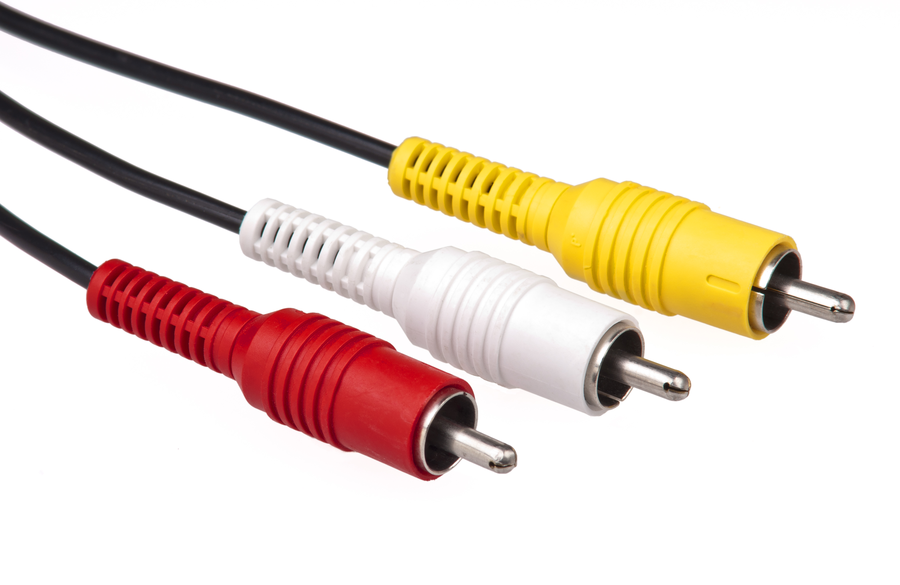

ജയകുമാർ നായർ തയ്യാറാക്കിയത്
reference : PC Hardware in a Nutshell, 3rd Edition by Robert Bruce Thompson, Barbara Fritchman Thompson pdf
ports and connectors
# list of IRQ addresses
= IRQ 0 Timer channel 0 (May mean "no interrupt". See below.)
= IRQ 1 Keyboard
= IRQ 2 Cascade for controller 2
= IRQ 3 Serial port 2
= IRQ 4 Serial port 1
= IRQ 5 Parallel port 2, Sound card
= IRQ 6 Floppy diskette
= IRQ 7 Parallel port 1
= IRQ 8 Real-time clock
= IRQ 9 Redirected to IRQ2
= IRQ 10 not assigned
= IRQ 11 not assigned
= IRQ 12 not assigned
= IRQ 13 Math coprocessor
= IRQ 14 Hard disk controller 1
= IRQ 15 Hard disk controller 2
# multifunction ports
= serial ports
- varieties
. 9 pin(more common)
. 15 pin
. 25 pin
. 37 pin
- transfer rate
. at one time : 1 bit
. in a second : 115 kilobits per second(Kbps)/14.375 kilobytes(kBps)
- devices connected to PC via serial port
. mice
. external modems
. label printers
. personal digital assistants(PDA)
. digital camera
- assigned system resources
. name : serial port 1(COM1)
. base address : 0x3F8
. I/O port range : 0x3F8 - 0x3FF
. IRQ : 4
. name : serial port 2(COM2)
. base address : 0x2F8
. I/O port range : 0x2F8 - 0x2FF
. IRQ : 3
. name : serial port 3(COM3)
. base address : 0x3E8
. I/O port range : 0x3E8 - 0x3EF
. IRQ : 4
. name : serial port 4(COM4)
. base address : 0x2E8
. I/O port range : 0x2E8 - 0x2EF
. IRQ : 3
= parallel ports
- varieties
. 9 pin(more common)
. 15 pin
. 25 pin
. 37 pin
- transfer rate
. at one time : 8 bits/1 byte
. in a second : 150 kB/s, newer ports reach speeds of up to 2 MB/s
- devices connected to PC via serial port
. CD/ROM drives
. Zip drives
. scanners
- assigned system resources
. name : parallel port 1(LPT1)
. base address : 0x378
. IRQ : 7
- standard
. IEEE 1284
# single function ports
= keyboard port
- purple 6 pin mini DIN(PS2 keyboard connector)
= mouse port
- green 6 pin mini DIN(PS2 mouse connector)
= video port
- 15 pin D-subminiature connector for standard cathode ray tube(CRT)
- 24 pin digital visual interface(DVI) connector for LCD monitor and some projectors
. DVI-A for analog
. DVI-B for digital
- component and RGB video port
. 3 RCA connectors

. 5 BNC connectors
= audio port
- green holder for speaker output
- ping holder for microphone input
- blue holder for auxiliary input. AUX cable to connect devices like soundbars and television together
= multimedia ports
- RG-6 coaxial connector to receive video and audio signals from a cable company or a video casette player
- HDMI(high definition multimedia interface) ports for connecting the PC to a HDTV(high definition television)
= MIDI/joystick ports
- 15 pin DB connector used both for MIDI devices and joysticks
= modem ports
- identical to telephone jacks and use 2 wire RJ-11 telephone cables and connectors
= network interface ports(NIC)
- varieties
. RJ-45 port
. 2(in/out) fiber connectors, connectors on in or out cables can be same type of connectors or different connectors
. ST(straight tip connector)
. SC(subscriber or square connector)
. LC(lucent connector or little connector, which is a miniature form of SC, most common)
. FC(fiber optic connector) with a threaded body designed for use in high-vibration environments
# multifunction ports
= these ports are replacing serial and parallel ports
= USB(universal serial bus)
- 2 flavors
. USB(low speed USB 2.0 specification)
. speed of 1.5 to 12 Mbps
. Hi-Speed USB
. speed of 480 Mbps
- varieties
. A
. connecting to port on PC or USB hub
. B
. connecting to printers and scanners
. mini
. connecting to digital cameras and music players
- USB devices are hot swappable and can connect upto 127 devices together in a series called a daisy chain. daisy chain is similar to a garland of daisy flowers
= IEEE 1394
- different manufacturers market IEEE 1394 technology under different trade names
- FireWire (apple)
. IEEE 1394a, speed upto 400 Mbps
. IEEE 1394b, speed upto 800 Mbps
. design spec of FireWire states that speed up to 1600 Mbps is possible
. 4 pin mini firewire connector for firewire 400 devices
. 9 pin for firewire 800 devices
- iLink (sony)
- Lyrx (texas instruments)
- after 2011, firewire ports are replaced with thunderbolt ports
- 63 firewire devices can be interconnected, firewire carry power through its own line
= SCSI(small computer systems interface)
- 25 pin port`
- 50 pin port
- 68 pin port
- speed 5 to 80 MBps for early versions
- speed 320 MBps for current versions
maintenance and precautions
# cleaning and maintenance of PC
= liquid cleaning compounds
- clean and soapy water
- denatured alcohol
- glass cleaner
- vinegar and water solution
- commercial computer cleaning solutions
. computer brite
. computer bath
= cleaning tools
- canned air
- lint free cloths
- brushes and swabs
- non-static vacuums
= cleaning the outside of PC, monitor and peripherals
- mice
- keyboard
- monitor screens
= cleaning contacts, connectors, mother board and components
- contacts and connectors
- motherboards and components
= component protection and storage
- power problems
= saving PC from electrical problems
- uninterruptible power supplies
- standby power systems
- online UPS
- surge suppressors
- unplug your PC
- EMI noise filters
= Storing components for future use
- storage environment
- electrical precautions
- moisture
= electrostatic discharge precautions and procedures
- types of ESD
. catastrophic ESD damage
. hidden ESD damage
. ESD degradation
= common ESD protection devices
- antistatic wrist and ankle straps
- antistatic mats
- antistatic floor mats
- antistatic bags
motherboards
# motherboard provides the framework upon which every other component builds
# techs call motherboard as system board or mobo
# manufactures decide 3 things when creating a new mobo
= select the set of chips (chipset) that provide support for everything that plugs into the motherboard
= mobo's form factor
= decide on the connectors to include for both internal and external devices
# chipset
= mobo consists of 2 chipsets and an optional third
- northbridge, high-speed components are connected to the northbridge like CPU, RAM, AGP, and PCI Express slots
- southbridge, lower speed components are connected to the southbridge like some expansion devices and mass storage drives such as hard drives
- super i/o, SIO is an integrated circuit on a computer motherboard that handles the slower and less prominent input/output devices such as floppy drive, parallel ports, serial ports
= these chipsets determines the type of components the mobo accepts
- type of processor
- type and capacity of RAM
- other internal and external devices
= chips in the Northbridge chipset vary from company to company
- Intel-based motherboards connect the CPU to RAM through their northbridge, which houses the memory controller
- AMD-based motherboards communicate with the video card rather than the RAM since the memory controller is within the CPU
= chipset needs support form
- system ROM chip which provides part of the BIOS for the chipset
- drivers from manufacturer
# form factors
= most common motherboard form factors are
- ATX (Advanced Technology Extended) - standard for desktop computers, available in both full-size and mini variants.
- Micro-ATX - slightly smaller variant of ATX, often used in budget and mid-range builds.
- Mini-ITX - small form factor, used in small PCs, home theater systems, and other compact builds.
= ATX
- northbridge chip encircled by CPU, RAM and power connections
- 3 ATX form factors
. standard ATX, standard for desktop computers, available in both full-size and mini variants
. micro ATX, slightly smaller variant of ATX, often used in budget and mid-range builds
. flex AX, smaller variant of Micro-ATX, primarily used in small form factor computers and embedded systems.
- all factors use same power connections and same basic layout
- micro and flex factors well fit into full sized motherboard
- blow the hot air into the case/cabinet and power supply and system case fans pull the hot air out
= BTX(balanced technology eXtended)
- BTX offer better cooling than ATX
- 3 BTX form factors
. standard BTX
. micro BTX
. pico BTX
- CPU moved to the front of the mobo
- BTX defines a special heat sink and fan assembly called thermal unit
- thermal unit fan blows hot CPU air directly through the back of the case
- never gained widespread popularity
= proprietary form factors
- Mini-ITX - Small form factor, used in small PCs, home theater systems, and other compact builds.
- DTX - Designed as a small form factor alternative to ATX, but did not gain widespread popularity.
- LPX - Obsolete form factor, commonly used in older desktop computers.
- NLX - Obsolete form factor, primarily used in small form factor desktops and servers.
- WTX - High-end server motherboard form factor, never gained widespread popularity
# motherboard connections
= motherboard comes with connectors to support dozens of devices
= if you want to connect any new high-speed device to the motherboard that is not supported by the current motherboard, do the following
- install the high speed device controller in to the expansion slot. how to install the controller (https://youtu.be/aGdiCf0oPEY)
- connect the device to any of the ports of the controller
# installing motherboard
= steps for installing a motherboard (https://youtu.be/Ce4xTcKe5bs?t=1m22s)
= right method to remove thermal paste from the cpu (https://youtube.com/shorts/qtfL3tFveiY?feature=share)
# power supply
= PC's power supply coverts high voltage alternating current(AC) power into the lower voltage direct current(DC) power that the motherboard and drives need
= form factors
- ATX
- proprietary power supplies
= connectors
- 4 wire mini and molex connectors for floppy, PATA and SCSI drives
- serial ATA(SATA) connectors for SATA drives
- 6 wire PCIe connectors
= power supply connect to mother board with following connectors
- 20 or 24 wire P1 connector, primary power circuit (5v orange wire on the P1 connector is called power good)
- 4 wire P4 connector to add another 12 volt circuit to add stability
- 6 wire auxiliary connector for auxiliary power for motherboard
- PCIe PCIe video cards
- SATA for sata drives
- Mini for floppy drives
- Molex for PATA, SCAI hard drives,optical drives, some PCIe vedeo cards and some PCIe mother boards
# cases/cabinets
= basic sizes
- slimline
- desktop
- mini tower
- mid tower
- tower
- cube
CPU
# tech should concentrate on following
= understand the basic internal components of a CPU and what they do
= how to install CPU and its cooling system
= handle relatively simple troubleshooting
# processor is referred to as 32-bits or 64-bits based on the
= size of its data bus
= width of the register
# size of its data bus, which determines the amount of data it can process in a single clock cycle. A 32-bit processor has a data bus of 32 bits, allowing it to process data in chunks of 32 bits at a time,
whereas a 64-bit processor has a data bus of 64 bits, allowing it to process data in chunks of 64 bits at a time. This means that a 64-bit processor can handle more data at once than a 32-bit processor,
making it faster and more efficient for certain tasks.
# width of the register, the size of a processor's register is related to the processor's designation as 32-bit or 64-bit. The register is a small amount of high-speed memory within the processor that stores
data that is being used or manipulated. In a 32-bit processor, the register is typically 32 bits wide, and in a 64-bit processor, the register is typically 64 bits wide. The size of the register affects
the amount of data that the processor can work with at one time, which in turn affects its overall performance. Having a larger register size in a 64-bit processor allows it to handle larger amounts of
data, which can result in improved performance for certain types of tasks
# inside the CPU
= modern CPUs have dedicated circuitry to process amazingly complex things
- ALU, this circuit takes data from the CPU registers process it and copies it back into the registers
- registers, these are memory circuits located inside the CPU
. general-purpose registers: used to store data and address information temporarily during the execution of an instruction
. program counter (pc) register: holds the address of the next instruction to be executed
. stack pointer (sp) register: holds the address of the top of the stack
. status/flag register: contains information about the current state of the cpu, such as zero, carry, overflow, and sign flags
. instruction pointer (ip) register: holds the address of the current instruction being executed
. accumulator register: used to store intermediate results of arithmetic and logic operations
. base register: used to store the base address of a memory area, often used with index and scale factors to calculate memory addresses
. index register: used in conjunction with base and scale factors to calculate memory addresses
. floating-point registers: used to store floating-point numbers for mathematical operations
- FPU(floating point unit), handles complex calculations for application such as graphics programs and 3D games
- cache memory, purpose of cache memory in a modern CPU is to temporarily store frequently used data and instructions to reduce the number of accesses to the slower main memory
. L1 Cache: smallest and fastest cache memory, located closest to the CPU. It stores frequently used data and instructions to reduce the number of accesses to the main memory.
. L2 Cache: this cache is slightly larger and slower than the L1 cache, but still faster than the main memory. It acts as a buffer between the L1 cache and the main memory
. L3 Cache: this is a larger cache memory found in some high-performance CPUs. It is slower than the L2 cache
- order of data fetching from L3, L2, and L1 cache is as follows
. L1 Cache: The smallest and fastest cache memory, located closest to the CPU. The CPU will first check the L1 cache for the requested data, as this is the fastest way to access the data.
. L2 Cache: If the data is not found in the L1 cache, the CPU will then check the L2 cache, which is slower but larger than the L1 cache.
. L3 Cache: If the data is not found in either the L1 or L2 cache, the CPU will then check the L3 cache, which is larger and slower than the L2 cache.
- front-side bus
. connects the CPU to the chipset on the motherboard, which in turn connects to other components such as memory, peripheral devices, and the graphics card
. the speed of the front-side bus determines the speed of the CPU-to-memory communication, which affects the overall performance of the system
- back-side bus
. connects the CPU's cache to the CPU itself
. the back-side bus speed determines the speed of the cache-to-CPU communication, which can have a significant impact on the performance of the CPU
- in modern computer systems, the front-side bus and back-side bus have largely been replaced by the quick path interconnect (QPI) and the direct media interface (DMI)
# address space
= address space refers to the range of memory addresses that a computer's CPU can access
= it is the range of memory addresses that are available for use by programs and data stored in the computer's memory
= number of the wires in the address bus defines the maximum amount of RAM a CPU can theoretically address
= address space is divided into two main categories
- user space, portion of the address space that is available to user-level programs
- kernel space, portion of the address space that is reserved for the operating system's kernel
= boundary between user space and kernel space is fixed and cannot be crossed by user-level programs
= the CPU can address 4GB bytes(232) with 32 wires in an address bus
# concept and terms to differentiate among CPUs
= pipeline
= clock speed
= multipliers
# pipeline
= pipelining is a computer architecture technique used in processors to improve performance. It involves dividing the instruction execution process into multiple stages, with each stage performing a
specific task. The stages are organized in a pipeline, and each stage works on a different part of an instruction. This allows multiple instructions to be processed simultaneously, resulting in increased
throughput and improved performance. The stages in a pipeline can include tasks such as
- fetching instruction
- decoding
- executing
- writing results back to memory
= Intel Core i9-11900K(11th gen) and Xeon Scalable processors support upto 20 pipelines
=
# approximate release dates of some popular Intel CPU families:
= 1993 : Intel Pentium : client CPU
= 1998 : Intel Celeron : client CPU
= 1998 : Intel Xeon : server CPU
= 2008 : Intel Atom : client CPU
= November 2008 : Intel Core i7 : client CPU
= September 2009 : Intel Core i5 : client CPU
= January 2010 : Intel Core i3 : client CPU
= 2014 : Intel Core M : client CPU
= May 2017 : Intel Core i9 : client CPU
= June 2017 : Intel Core X-series : client CPU
# approximate release dates of some popular AMD CPU families
= August 1999 : AMD Athlon : client CPU
= April 2003 : AMD Opteron : server CPU
= June 2011 : AMD A-Series : client CPU
= June 2011 : AMD E-Series : client CPU
= October 2011 : AMD FX-Series : client CPU
= February 2017 : AMD Ryzen : client CPU
= June 2017 : AMD EPYC : server CPU
= August 2017 : AMD Threadripper : client CPU
# list of some of the Intel Core i9 processors:
= Intel Core i9-11900K(maximum of 20 pipelines)
= Intel Core i9-11900
= Intel Core i9-11900T
= Intel Core i9-11900H
= Intel Core i9-11980HK
= Intel Core i9-10850K
= Intel Core i9-10900K
= Intel Core i9-10900
= Intel Core i9-10900T
= Intel Core i9-10900F
= Intel Core i9-10900KF
= Intel Core i9-9900KS
= Intel Core i9-9900K
= Intel Core i9-9900
= Intel Core i9-9900T
# list of some of the Intel Xeon processors:
= Intel Xeon Scalable processors(maximum of 20 pipelines): Platinum, Gold, Silver, Bronze
= Intel Xeon Platinum 9282
= Intel Xeon Platinum 8280
= Intel Xeon Gold 6258R
= Intel Xeon Gold 6248
= Intel Xeon Silver 4215R
= Intel Xeon Bronze 3204
= Intel Xeon W processors:
= Intel Xeon W-3235
= Intel Xeon W-3245
= Intel Xeon W-3275
= Intel Xeon W-3275M
= Intel Xeon E processors:
= Intel Xeon E-2278GEL
= Intel Xeon E-2278GELT
= Intel Xeon E-2288G
= Intel Xeon E-2286M
= Intel Xeon D processors:
= Intel Xeon D-2191
= Intel Xeon D-2183IT
= Intel Xeon D-2146NT
= Intel Xeon D-2123IT
# list of some of the AMD Threadripper processors
= Ryzen Threadripper Pro series : 3995WX, 3975WX, 3955WX
= Ryzen Threadripper series : 3990X, 3970X, 3960X, 3950X, 3945WX, 3965WX
= Ryzen Threadripper 3000 series: 3995X, 3975X, 3965X, 3960X, 3955X, 3945X
= Ryzen Threadripper 2000 series: 2990WX, 2970WX, 2950X, 2920X, 2950WX
# list of some of the AMD Ryzen processors:
= Ryzen 9: 5950X, 5900X, 5800X
= Ryzen 7: 5800G, 5600X, 5700X, 5500X
= Ryzen 5: 5600G, 5600GE, 5500, 5400G
= Ryzen 3: 4300GE, 4100
# Name: Intel Xeon Scalable processor Platinum (Ice Lake-SP)
= Processor type: Server
= Release year: 2021
= Number of pipeline stages: Not publicly disclosed by Intel
= Number of cores: Varies from 8 to 40, depending on the specific model
= Number of threads: Varies from 16 to 80, depending on the specific model
= Micro architecture: Sunny Cove
= Manufacturing process: 10-nanometer
# Name: 11th generation Intel Core i9 (Rocket Lake-S)
= Processor type: Consumer desktop
= Release year: 2021
= Number of pipeline stages: Not publicly disclosed by Intel
= Number of cores: Varies from 8 to 12, depending on the specific model
= Number of threads: Varies from 16 to 24, depending on the specific model
= Microarchitecture: Cypress Cove
= Manufacturing process: 14-nanometer
# Name: AMD EPYC 7003 series (Milan)
= Processor type: Server
= Release year: 2021
= Number of pipeline stages: Not publicly disclosed by AMD
= Number of cores: Varies from 8 to 64, depending on the specific model
= Number of threads: Varies from 16 to 128, depending on the specific model
= Micro architecture: Zen 3
= Manufacturing process: 7-nanometer
# Name: Ryzen Threadripper Pro series 3995WX
= Processor type: high-end desktop (HEDT)
= Release year: 2021
= Number of pipeline stages: Not publicly disclosed by AMD
= Number of cores: 64
= Number of threads: 128
= Micro architecture: Zen 2
= Manufacturing process: 7-nanometer
# Name: Ryzen 9 5950X
= Processor type : high-performance desktop(HPDT)
= Release year: 2020
= Number of pipeline stages: Not publicly disclosed by AMD
= Number of cores: 16
= Number of threads: 32
= Micro architecture: Zen 3
= Manufacturing process: 7-nanometer
protection
 Low Pin Count bus
fron side bus
A computer works by following a sequence of steps from the moment it is powered on:
Power-On Self-Test (POST): The computer performs a series of tests to check if all hardware components are functioning properly.
Bootstrap Loader: The bootstrap loader, also known as the boot loader, is executed by the computer's central processing unit (CPU). This program locates and loads the operating system into memory.
Operating System Load: The operating system, such as Windows, macOS, or Linux, is loaded into memory and takes control of the computer. The operating system initializes all the necessary systems and
drivers to run the computer.
User Login: The user is prompted to enter their username and password to log into the operating system.
Desktop: After logging in, the user is presented with the desktop, which is the starting point for interacting with the computer. The desktop provides access to applications, files, and settings.
Application Launch: The user can launch applications, such as a web browser, text editor, or media player, to perform specific tasks.
Input and Output: The computer processes the user's input, such as typing on the keyboard or clicking the mouse, and generates output, such as displaying images on the screen or playing sound through
the speakers.
Processing: The computer performs calculations and manipulates data based on the user's input and the instructions provided by the operating system and applications.
Data Storage: The computer stores data on a storage device, such as a hard drive or solid-state drive, for later retrieval and use.
These are the basic steps involved in the operation of a computer from the moment it is powered on.
RAM, or Random Access Memory, is a type of computer memory used for temporarily storing data. When a computer is powered on, the operating system and applications are loaded into RAM, allowing the
processor to quickly access and manipulate the data. RAM is called "random access" because the processor can access any piece of data stored in RAM without having to go through a sequence of memory
locations. This is in contrast to other types of memory, such as a hard drive, where data is stored in a specific location and must be retrieved in a linear sequence. The amount of RAM in a computer
determines how many applications can be run simultaneously and how much data can be quickly processed. When the RAM is full, the computer may store excess data in a temporary file on the hard drive,
which is slower to access. This is known as "swapping" or "paging."
In summary, RAM plays an important role in the performance of a computer by allowing the processor to quickly access and manipulate data.
SIMM (Single In-line Memory Module) and DIMM (Dual In-line Memory Module) are two different types of memory modules used in computers to add additional RAM.
A SIMM is an older type of memory module that typically contains a single row of memory chips and a single edge connector. SIMMs were widely used in older computers, such as those based on the ISA or
VESA local bus standards. A DIMM, on the other hand, is a more modern type of memory module that contains two rows of memory chips and a double edge connector. DIMMs are widely used in newer computers,
such as those based on the PCI Express or DDR memory standards. In terms of performance, DIMMs generally offer higher memory capacity and faster data transfer rates compared to SIMMs. However, the specific
capabilities of a SIMM or DIMM will depend on the specific memory technology used and the design of the memory module. In summary, SIMMs and DIMMs are two different types of memory modules used in computers
to add additional RAM. DIMMs are more commonly used in newer computers and offer higher memory capacity and faster
data transfer rates compared to SIMMs.
There are several different form factors for Random Access Memory (RAM) modules, including:
DIMM (Dual In-line Memory Module): DIMMs are the most common form factor for RAM modules and are used in desktop and laptop computers. DIMMs come in different sizes, with the most common being 144-pin and
240-pin for DDR2 and DDR3 memory, and 288-pin for DDR4 memory. SO-DIMM (Small Outline DIMM): SO-DIMMs are smaller versions of DIMMs and are used in laptops, mini-desktops, and other compact computer systems.
SO-DIMMs are smaller in size and have a different pin count, typically 204-pin or 260-pin, compared to full-size DIMMs. RIMM (Rambus Inline Memory Module): RIMMs are a type of memory module that were
developed by Rambus, Inc. They were designed for use in high-end computer systems and offered higher performance than traditional SDRAM and DDR memory modules. RIMMs have since been replaced by DDR and DDR2
memory modules. SODIMM (Small Outline Dual In-line Memory Module): SODIMMs are similar to SO-DIMMs but are used in older laptop and mini-desktop computer systems. SODIMMs have a different pin count than
SO-DIMMs and are not commonly used in modern systems. FB-DIMM (Fully Buffered DIMM): FB-DIMMs are a type of DIMM that were developed for use in server and high-end desktop computer systems. FB-DIMMs offer
improved performance compared to traditional DIMMs, but have since been replaced by newer memory technologies such as DDR3 and DDR4. In summary, there are several different form factors for RAM modules, each
with its own specific design and specifications. The form factor of a RAM module determines its physical size, pin count, and
performance characteristics, and is an important consideration when selecting memory for a computer system.
SRAM (Static Random Access Memory) and DRAM (Dynamic Random Access Memory) are two different types of computer memory.
SRAM is a type of memory that uses a flip-flop circuit to store each bit of data, rather than a capacitor as in DRAM. The flip-flop circuit retains its state as long as power is supplied, so SRAM does not
need to be constantly refreshed like DRAM. This makes SRAM faster than DRAM, but also more expensive to produce.
DRAM (Dynamic Random Access Memory) is a type of memory that stores each bit of data in a separate capacitor within a memory cell, with the level of charge in the capacitor representing a 0 or 1. The charge
in the capacitors slowly leaks away, so the data has to be constantly refreshed or it will be lost. DRAM is used as the main memory in most computers, where it holds the operating system, programs, and data
that are currently being used.
In summary, SRAM is faster and more expensive than DRAM, but is used in smaller quantities as cache memory or in specific applications that require high-speed memory. DRAM is slower than SRAM but is much
cheaper and is used as the main memory in most computers.
Clock speed and bus speed are two important parameters that determine the performance of a computer.
Clock speed, also known as clock rate or frequency, is the rate at which a computer's central processing unit (CPU) runs. It is measured in Hertz (Hz), and represents the number of clock cycles that the
CPU can perform in one second. The higher the clock speed, the faster the CPU can perform its operations. Bus speed, also known as front-side bus speed, is the speed at which data is transferred between
the CPU and other components in a computer. It is measured in Megahertz (MHz) or Gigahertz (GHz), and represents the number of data transfers that can be performed in one second. The higher the bus speed,
the faster data can be transferred between the CPU and other components. In summary, clock speed determines the speed at which the CPU can perform its operations, while bus speed determines the speed at
which data is transferred between the CPU and other components. Both clock speed and bus speed play a critical role in determining the overall performance of a computer.
A front-side bus (FSB) is a type of computer bus that connects the central processing unit (CPU) to the main memory (RAM) and other components, such as the memory controller and peripheral components. The
FSB is responsible for transmitting data and commands between the CPU and the rest of the system. The speed of the FSB, measured in megahertz (MHz), is a key factor in determining the performance of a
computer system. A faster FSB speed allows for more data to be transmitted between the CPU and memory, which can result in improved performance. The FSB speed is one of several factors that determine the
overall performance of a computer system, along with the CPU clock speed, memory speed, and other components.
In modern computer systems, the FSB has been replaced by other types of computer buses, such as the Quick Path Interconnect (QPI) in Intel-based systems and the HyperTransport bus in AMD-based systems. These
newer buses are designed to provide higher bandwidth and lower latency than traditional FSBs, enabling improved performance and scalability for modern computer systems.
A flip-flop circuit stores a bit of data by using two stable states, one representing a logical "1" and the other a logical "0". The state of the flip-flop is changed by external signals, such as clocks or
inputs, which cause the circuit to switch from one state to the other. The circuit maintains its state until it is changed by another input, allowing it to store a single bit of data. There are several
types of flip-flops, including the SR flip-flop, JK flip-flop, and D flip-flop, each with its own set of inputs and outputs.
SR, JK, and D are three types of flip-flops, which are digital circuits that store a single bit of data.
SR Flip-Flop: The SR (Set-Reset) flip-flop is a basic type of flip-flop that has two inputs, S (set) and R (reset), and two outputs, Q and Q'. The S and R inputs determine the state of the flip-flop,
with S=1 and R=0 setting Q to 1, S=0 and R=1 resetting Q to 0, and S=R=1 resulting in an undefined state.
JK Flip-Flop: The JK (Jack-Kilby) flip-flop is an improvement over the SR flip-flop that has two inputs, J and K, and two outputs, Q and Q'. The inputs determine the state of the flip-flop, with J=K=1
resulting in a toggle(i.e. from 1 to 0, or from 0 to 1), J=1 and K=0 setting Q to 1, J=0 and K=1 resetting Q to 0, and J=K=0 resulting in no change to the state of the flip-flop.
D Flip-Flop: The D (Data) flip-flop is a type of flip-flop that has a single input, D, and two outputs, Q and Q'. The D input determines the state of the flip-flop, with D=1 setting Q to 1 and D=0
resetting Q to 0. The output of the flip-flop is stored until the next clock edge, when the input is read and the state is updated.
When J=K=1 in a JK flip-flop, the circuit is said to "toggle." This means that the output of the flip-flop will switch from its current state to its opposite state (i.e. from 1 to 0, or from 0 to 1). The
JK flip-flop is designed in such a way that whenever J=K=1, the output will toggle each time there is a clock pulse. This behavior is useful in certain applications where a change in state is required each
time a clock pulse is received. Toggling is a type of sequential logic operation where the output of a circuit changes state with each clock cycle, making it a powerful tool for designing digital systems.
The D flip-flop is a commonly used type of flip-flop in memory circuits. The D flip-flop allows for data to be stored and updated with each clock cycle, making it well suited for use in random access memory
(RAM) and read-only memory (ROM) applications. The D input is used to store the data, and the output remains stable until the next clock edge, allowing for the data to be held in memory. The D flip-flop is
also commonly used in digital circuits as a building block for more complex memory circuits.
Flip-flops, including SR, JK, and D flip-flops, are fundamental building blocks in digital electronics and play important roles in computer systems. Here are some common uses:
SR and JK Flip-Flops in Sequential Logic: SR and JK flip-flops are used to build sequential logic circuits that store and process data. They are often used to build state machines, counters, and shift
registers, which are essential components in many digital systems.
D Flip-Flop in Memory: D flip-flops are widely used in memory circuits, including random access memory (RAM) and read-only memory (ROM). They allow for data to be stored and updated with each clock cycle,
making them ideal for use in these applications.
Flip-Flops in Clock Generation: Flip-flops are also used in clock generation circuits, where they are used to create stable clock signals that drive other digital circuits. By using flip-flops in this way,
designers can ensure that clock signals are clean and free of jitter, which is essential for proper operation of digital systems.
Flip-Flops in Data Synchronization: Flip-flops are used to synchronize data in many digital systems. For example, they can be used to align data with a clock signal, ensuring that data is read at the
correct time and allowing for proper processing of the data.
In summary, flip-flops play a crucial role in many digital systems and are used for a variety of purposes, including data storage, sequential logic, clock generation, and data synchronization.
In Dynamic Random Access Memory (DRAM), a capacitor is used to store each bit of data. The capacitance of the capacitor is charged to a high voltage to represent a binary 1, and discharged to a low voltage
to represent a binary 0.
Each DRAM cell consists of a single transistor and a capacitor. The transistor acts as a switch that controls the flow of charge to and from the capacitor. To store a 1, the transistor is turned on, and
charge is stored on the capacitor. To store a 0, the transistor is turned off, and the charge on the capacitor is leaked off over time.
Since the charge stored on the capacitor will eventually leak off, the memory must be periodically refreshed to maintain the stored data. This is done by reading the state of each cell and writing the
data back to the cell, effectively restoring the charge on the capacitor.
DRAMs are widely used in modern computers due to their relatively low cost and high density. The use of capacitors to store data allows for a large number of bits to be stored in a small amount of
physical space, making it an attractive option for use in memory applications.
In a Dynamic Random Access Memory (DRAM) cell, a binary 1 is typically represented by a voltage level of around 1.5 volts to 2.5 volts, relative to the voltage level that represents a binary 0. The exact
voltage required to change the state of a DRAM cell from a 0 to a 1, or vice versa, depends on the specific design of the memory cell and the technology used to implement it.
It's important to note that DRAM cells are sensitive to voltage levels, and the voltage required to change the state of the cell can vary depending on temperature, process variations, and other factors. To
ensure reliable operation, DRAM cells are designed with margin to account for these variations, and the memory controller provides precise control over the voltage levels applied to the memory cells.
Reading the label on a RAM stick can help you determine the specifications and compatibility of the memory module. Here is what to look for on a typical RAM label:
Capacity: The amount of memory, typically expressed in gigabytes (GB).
Type: The type of memory, such as DDR4, DDR3, DDR2, etc.
Speed: The speed of the memory, expressed in megahertz (MHz) or gigahertz (GHz).
Voltage: The voltage required by the memory, typically expressed in volts (V).
Timings: The timings of the memory, expressed as a series of numbers separated by dots. Timings refer to the delay between the sending of a command and the completion of the corresponding operation.
CL (CAS Latency): The CAS latency is the number of clock cycles required to complete a read operation. The lower the CL, the faster the memory.
Manufacturer: The name of the manufacturer of the memory module.
Model number: The specific model number of the memory module.
Form factor: The form factor of the memory module, such as DIMM, SO-DIMM, etc.
It's important to ensure that the RAM you select is compatible with your computer system. You should check the specifications of your system, including the supported memory types, speeds, and capacities,
before purchasing and installing new memory.
A memory bank is a group of memory chips on a RAM (Random Access Memory) module that work together to store data. A memory rank is a term used to describe the number of memory banks on a RAM module. The
difference between the two is that a memory bank is a physical group of memory chips, while a memory rank is a logical grouping of memory banks that determines the amount of data that can be transferred
to and from the memory chips at one time. For example, a RAM module with two memory banks may be considered a single rank, while a module with four memory banks may be considered a dual rank. The more memory
banks on a module, the more data can be transferred to and from the memory chips at one time, which can result in improved performance.
A "picoclick" is a unit of time used in computer memory technology to describe the duration of a single clock cycle. It is abbreviated as "PC" and is equivalent to one-trillionth (10^-12) of a second. The
smaller the PC value, the faster the memory transfer rate.
CL (Column Latency) is a measurement of how many clock cycles it takes for data to be available to read from the memory after the memory controller sends a request for the data. CL11 and CL22 are two
different speeds at which RAM operates. The CAS latency, often represented as CL. CL11 is a faster speed and indicates that the RAM can access data in 11 clock cycles, while CL22 is slower and indicates that
the RAM requires 22 clock cycles to access data. The lower the number, the faster the RAM is able to access data, so CL11 is considered to be faster than CL22.
The most popular motherboard makers are:
ASUS
Gigabyte Technology
MSI (Micro-Star International)
ASRock
Intel
EVGA
Supermicro
Tyan
Biostar
Elitegroup Computer Systems (ECS)
The most popular RAM makers are:
Corsair
Kingston
G.Skill
Crucial (a subsidiary of Micron Technology)
HyperX (a subsidiary of Kingston)
The most popular ROM (flash storage) makers are:
Samsung
Sandisk (a subsidiary of Western Digital)
Kingston
Toshiba
Western Digital (WD)
The most popular CPU makers are:
Intel Corporation
AMD (Advanced Micro Devices)
Qualcomm (for mobile/smartphone processors)
ARM Holdings (for mobile/smartphone processors)
Apple (for custom processors used in their devices)
The most popular GPU (graphics processing unit) makers are:
NVIDIA
AMD
Intel (for integrated graphics)
ARM Holdings (for mobile/smartphone GPUs)
Qualcomm (for mobile/smartphone GPUs)
The most popular SMPS (switch mode power supply) makers are:
Corsair
Seasonic
EVGA
Super Flower
SilverStone Technology
XFX
Thermaltake
Antec
FSP (Fortron Source)
be quiet!
The most popular heatsink makers are:
Cooler Master
Corsair
Noctua
be quiet!
Thermaltake
ARCTIC
Deepcool
SilverStone Technology
Raijintek
Zalman Tech Co. Ltd.
The most popular computer fan makers are:
Corsair
Noctua
Cooler Master
be quiet!
ARCTIC
Deepcool
Thermaltake
SilverStone Technology
Raijintek
Zalman Tech Co. Ltd.
The most popular keyboard makers are:
Corsair
Logitech
Razer
SteelSeries
Ducky
HyperX (a subsidiary of Kingston)
ASUS ROG (Republic of Gamers)
FILCO
Royal Kludge
Anne Pro 2
The most popular mouse makers are:
Logitech
Razer
Corsair
SteelSeries
ASUS ROG (Republic of Gamers)
HyperX (a subsidiary of Kingston)
Zowie Gear
Finalmouse
BenQ Zowie
A4Tech
The most popular computer monitor makers are:
Dell
ASUS
Samsung
LG Electronics
Acer
BenQ
AOC (Agreements on Optics and Color)
HP (Hewlett Packard)
ViewSonic
Eizo Nanao Technologies.
The most popular SSD (solid-state drive) makers are:
Samsung
Crucial (a subsidiary of Micron Technology)
Western Digital (WD)
Kingston
Sandisk (a subsidiary of Western Digital)
Toshiba
Corsair
Adata
Intel Corporation
Seagate Technology
The most popular hard disk drive (HDD) makers are:
Western Digital (WD)
Seagate Technology
Toshiba
Hitachi (now owned by Western Digital)
Samsung
HGST (a subsidiary of Western Digital)
Fujitsu
Maxtor (now owned by Seagate Technology)
IBM (now owned by Hitachi Global Storage Technologies)
Quantum (now owned by Western Digital)
The most popular southbridge makers are:
Intel Corporation
AMD (Advanced Micro Devices)
VIA Technologies
SiS (Silicon Integrated Systems)
ULi Electronics (now owned by ASMedia Technology)
ALi Corporation (now owned by Microchip Technology)
JMicron Technology
Nuvoton Technology
ASMedia Technology
Marvel Technology Group (now owned by Marvell Semiconductor)
Some of the most popular Super I/O chip makers are:
Nuvoton Technology
ITE Tech Inc.
SMSC (Microchip Technology)
Winbond Electronics
LPCware (NXP Semiconductors)
What is the BIOS, CMOS, and UEFI?
BIOS(basic input/output system) is the factory default firmware comes with your motherboard and stored in the BIOS chip and it is non-volatile. But the custom settings to the BIOS, such as a date and
time, the boot sequence, fan speeds are retained in the CMOS chip and it is volatile. In order for the CMOS to maintain its settings while the computer is turned off, it uses a CMOS battery. If the
battery is removed and then reattached, the BIOS will reset back to its factory default settings and erase any custom settings that you have configured. On modern motherboards, CMOS chip is integrated
with the real-time clock that's part of the southbridge chipset.
BIOS initializes the computer's hardware
- run power-on self-test(POST), initial set of diagnostic tests to verify all HW is working properly
- detect a boot able device
- sector 0 on the boot able device contains Master Boot Record (MBR). MBR consists of 2 components
- some executable assembly code
- a partition table containing all of the partition details in the drive
- sector 1, one of the partition is an 'active' partition. the first sector of the active partition is called the boot sector
- one of the first file in the boot sector get executed to load OS. this file might be bootmgr/ntldr
The OS installer is responsible for creating both sectors. Linux and Windows will create the same MBR but different boot sector
New type of BIOS is called UEFI. UEFI stands for unified extensible firmware interface. Advantages are
user-friendly GUI
recognize larger storage drives
use a mouse in the UEFI interface
has a built-in feature called secure boot which stops any digitally unsigned drivers from loading to stop malicious software such as rootkits
MBR and GPT
MBR is a older and GPT is a newer partitioning standard
MBR is Master Boot Record and GPT is GUID Partition Table
MBR only allows for 4 primary partitions per drive and GPT allows you to create hundreds of partitions per drive
MBR doesn’t support drives larger than 2 TB and GPT supports drives larger than one billion terabytes
goals of protection
principles of protection
domain of protection
access matrix
implementation of the access matrix
access control
revocation of access rights
capability-based systems
language-based protection
summary
Low Pin Count bus
fron side bus
A computer works by following a sequence of steps from the moment it is powered on:
Power-On Self-Test (POST): The computer performs a series of tests to check if all hardware components are functioning properly.
Bootstrap Loader: The bootstrap loader, also known as the boot loader, is executed by the computer's central processing unit (CPU). This program locates and loads the operating system into memory.
Operating System Load: The operating system, such as Windows, macOS, or Linux, is loaded into memory and takes control of the computer. The operating system initializes all the necessary systems and
drivers to run the computer.
User Login: The user is prompted to enter their username and password to log into the operating system.
Desktop: After logging in, the user is presented with the desktop, which is the starting point for interacting with the computer. The desktop provides access to applications, files, and settings.
Application Launch: The user can launch applications, such as a web browser, text editor, or media player, to perform specific tasks.
Input and Output: The computer processes the user's input, such as typing on the keyboard or clicking the mouse, and generates output, such as displaying images on the screen or playing sound through
the speakers.
Processing: The computer performs calculations and manipulates data based on the user's input and the instructions provided by the operating system and applications.
Data Storage: The computer stores data on a storage device, such as a hard drive or solid-state drive, for later retrieval and use.
These are the basic steps involved in the operation of a computer from the moment it is powered on.
RAM, or Random Access Memory, is a type of computer memory used for temporarily storing data. When a computer is powered on, the operating system and applications are loaded into RAM, allowing the
processor to quickly access and manipulate the data. RAM is called "random access" because the processor can access any piece of data stored in RAM without having to go through a sequence of memory
locations. This is in contrast to other types of memory, such as a hard drive, where data is stored in a specific location and must be retrieved in a linear sequence. The amount of RAM in a computer
determines how many applications can be run simultaneously and how much data can be quickly processed. When the RAM is full, the computer may store excess data in a temporary file on the hard drive,
which is slower to access. This is known as "swapping" or "paging."
In summary, RAM plays an important role in the performance of a computer by allowing the processor to quickly access and manipulate data.
SIMM (Single In-line Memory Module) and DIMM (Dual In-line Memory Module) are two different types of memory modules used in computers to add additional RAM.
A SIMM is an older type of memory module that typically contains a single row of memory chips and a single edge connector. SIMMs were widely used in older computers, such as those based on the ISA or
VESA local bus standards. A DIMM, on the other hand, is a more modern type of memory module that contains two rows of memory chips and a double edge connector. DIMMs are widely used in newer computers,
such as those based on the PCI Express or DDR memory standards. In terms of performance, DIMMs generally offer higher memory capacity and faster data transfer rates compared to SIMMs. However, the specific
capabilities of a SIMM or DIMM will depend on the specific memory technology used and the design of the memory module. In summary, SIMMs and DIMMs are two different types of memory modules used in computers
to add additional RAM. DIMMs are more commonly used in newer computers and offer higher memory capacity and faster
data transfer rates compared to SIMMs.
There are several different form factors for Random Access Memory (RAM) modules, including:
DIMM (Dual In-line Memory Module): DIMMs are the most common form factor for RAM modules and are used in desktop and laptop computers. DIMMs come in different sizes, with the most common being 144-pin and
240-pin for DDR2 and DDR3 memory, and 288-pin for DDR4 memory. SO-DIMM (Small Outline DIMM): SO-DIMMs are smaller versions of DIMMs and are used in laptops, mini-desktops, and other compact computer systems.
SO-DIMMs are smaller in size and have a different pin count, typically 204-pin or 260-pin, compared to full-size DIMMs. RIMM (Rambus Inline Memory Module): RIMMs are a type of memory module that were
developed by Rambus, Inc. They were designed for use in high-end computer systems and offered higher performance than traditional SDRAM and DDR memory modules. RIMMs have since been replaced by DDR and DDR2
memory modules. SODIMM (Small Outline Dual In-line Memory Module): SODIMMs are similar to SO-DIMMs but are used in older laptop and mini-desktop computer systems. SODIMMs have a different pin count than
SO-DIMMs and are not commonly used in modern systems. FB-DIMM (Fully Buffered DIMM): FB-DIMMs are a type of DIMM that were developed for use in server and high-end desktop computer systems. FB-DIMMs offer
improved performance compared to traditional DIMMs, but have since been replaced by newer memory technologies such as DDR3 and DDR4. In summary, there are several different form factors for RAM modules, each
with its own specific design and specifications. The form factor of a RAM module determines its physical size, pin count, and
performance characteristics, and is an important consideration when selecting memory for a computer system.
SRAM (Static Random Access Memory) and DRAM (Dynamic Random Access Memory) are two different types of computer memory.
SRAM is a type of memory that uses a flip-flop circuit to store each bit of data, rather than a capacitor as in DRAM. The flip-flop circuit retains its state as long as power is supplied, so SRAM does not
need to be constantly refreshed like DRAM. This makes SRAM faster than DRAM, but also more expensive to produce.
DRAM (Dynamic Random Access Memory) is a type of memory that stores each bit of data in a separate capacitor within a memory cell, with the level of charge in the capacitor representing a 0 or 1. The charge
in the capacitors slowly leaks away, so the data has to be constantly refreshed or it will be lost. DRAM is used as the main memory in most computers, where it holds the operating system, programs, and data
that are currently being used.
In summary, SRAM is faster and more expensive than DRAM, but is used in smaller quantities as cache memory or in specific applications that require high-speed memory. DRAM is slower than SRAM but is much
cheaper and is used as the main memory in most computers.
Clock speed and bus speed are two important parameters that determine the performance of a computer.
Clock speed, also known as clock rate or frequency, is the rate at which a computer's central processing unit (CPU) runs. It is measured in Hertz (Hz), and represents the number of clock cycles that the
CPU can perform in one second. The higher the clock speed, the faster the CPU can perform its operations. Bus speed, also known as front-side bus speed, is the speed at which data is transferred between
the CPU and other components in a computer. It is measured in Megahertz (MHz) or Gigahertz (GHz), and represents the number of data transfers that can be performed in one second. The higher the bus speed,
the faster data can be transferred between the CPU and other components. In summary, clock speed determines the speed at which the CPU can perform its operations, while bus speed determines the speed at
which data is transferred between the CPU and other components. Both clock speed and bus speed play a critical role in determining the overall performance of a computer.
A front-side bus (FSB) is a type of computer bus that connects the central processing unit (CPU) to the main memory (RAM) and other components, such as the memory controller and peripheral components. The
FSB is responsible for transmitting data and commands between the CPU and the rest of the system. The speed of the FSB, measured in megahertz (MHz), is a key factor in determining the performance of a
computer system. A faster FSB speed allows for more data to be transmitted between the CPU and memory, which can result in improved performance. The FSB speed is one of several factors that determine the
overall performance of a computer system, along with the CPU clock speed, memory speed, and other components.
In modern computer systems, the FSB has been replaced by other types of computer buses, such as the Quick Path Interconnect (QPI) in Intel-based systems and the HyperTransport bus in AMD-based systems. These
newer buses are designed to provide higher bandwidth and lower latency than traditional FSBs, enabling improved performance and scalability for modern computer systems.
A flip-flop circuit stores a bit of data by using two stable states, one representing a logical "1" and the other a logical "0". The state of the flip-flop is changed by external signals, such as clocks or
inputs, which cause the circuit to switch from one state to the other. The circuit maintains its state until it is changed by another input, allowing it to store a single bit of data. There are several
types of flip-flops, including the SR flip-flop, JK flip-flop, and D flip-flop, each with its own set of inputs and outputs.
SR, JK, and D are three types of flip-flops, which are digital circuits that store a single bit of data.
SR Flip-Flop: The SR (Set-Reset) flip-flop is a basic type of flip-flop that has two inputs, S (set) and R (reset), and two outputs, Q and Q'. The S and R inputs determine the state of the flip-flop,
with S=1 and R=0 setting Q to 1, S=0 and R=1 resetting Q to 0, and S=R=1 resulting in an undefined state.
JK Flip-Flop: The JK (Jack-Kilby) flip-flop is an improvement over the SR flip-flop that has two inputs, J and K, and two outputs, Q and Q'. The inputs determine the state of the flip-flop, with J=K=1
resulting in a toggle(i.e. from 1 to 0, or from 0 to 1), J=1 and K=0 setting Q to 1, J=0 and K=1 resetting Q to 0, and J=K=0 resulting in no change to the state of the flip-flop.
D Flip-Flop: The D (Data) flip-flop is a type of flip-flop that has a single input, D, and two outputs, Q and Q'. The D input determines the state of the flip-flop, with D=1 setting Q to 1 and D=0
resetting Q to 0. The output of the flip-flop is stored until the next clock edge, when the input is read and the state is updated.
When J=K=1 in a JK flip-flop, the circuit is said to "toggle." This means that the output of the flip-flop will switch from its current state to its opposite state (i.e. from 1 to 0, or from 0 to 1). The
JK flip-flop is designed in such a way that whenever J=K=1, the output will toggle each time there is a clock pulse. This behavior is useful in certain applications where a change in state is required each
time a clock pulse is received. Toggling is a type of sequential logic operation where the output of a circuit changes state with each clock cycle, making it a powerful tool for designing digital systems.
The D flip-flop is a commonly used type of flip-flop in memory circuits. The D flip-flop allows for data to be stored and updated with each clock cycle, making it well suited for use in random access memory
(RAM) and read-only memory (ROM) applications. The D input is used to store the data, and the output remains stable until the next clock edge, allowing for the data to be held in memory. The D flip-flop is
also commonly used in digital circuits as a building block for more complex memory circuits.
Flip-flops, including SR, JK, and D flip-flops, are fundamental building blocks in digital electronics and play important roles in computer systems. Here are some common uses:
SR and JK Flip-Flops in Sequential Logic: SR and JK flip-flops are used to build sequential logic circuits that store and process data. They are often used to build state machines, counters, and shift
registers, which are essential components in many digital systems.
D Flip-Flop in Memory: D flip-flops are widely used in memory circuits, including random access memory (RAM) and read-only memory (ROM). They allow for data to be stored and updated with each clock cycle,
making them ideal for use in these applications.
Flip-Flops in Clock Generation: Flip-flops are also used in clock generation circuits, where they are used to create stable clock signals that drive other digital circuits. By using flip-flops in this way,
designers can ensure that clock signals are clean and free of jitter, which is essential for proper operation of digital systems.
Flip-Flops in Data Synchronization: Flip-flops are used to synchronize data in many digital systems. For example, they can be used to align data with a clock signal, ensuring that data is read at the
correct time and allowing for proper processing of the data.
In summary, flip-flops play a crucial role in many digital systems and are used for a variety of purposes, including data storage, sequential logic, clock generation, and data synchronization.
In Dynamic Random Access Memory (DRAM), a capacitor is used to store each bit of data. The capacitance of the capacitor is charged to a high voltage to represent a binary 1, and discharged to a low voltage
to represent a binary 0.
Each DRAM cell consists of a single transistor and a capacitor. The transistor acts as a switch that controls the flow of charge to and from the capacitor. To store a 1, the transistor is turned on, and
charge is stored on the capacitor. To store a 0, the transistor is turned off, and the charge on the capacitor is leaked off over time.
Since the charge stored on the capacitor will eventually leak off, the memory must be periodically refreshed to maintain the stored data. This is done by reading the state of each cell and writing the
data back to the cell, effectively restoring the charge on the capacitor.
DRAMs are widely used in modern computers due to their relatively low cost and high density. The use of capacitors to store data allows for a large number of bits to be stored in a small amount of
physical space, making it an attractive option for use in memory applications.
In a Dynamic Random Access Memory (DRAM) cell, a binary 1 is typically represented by a voltage level of around 1.5 volts to 2.5 volts, relative to the voltage level that represents a binary 0. The exact
voltage required to change the state of a DRAM cell from a 0 to a 1, or vice versa, depends on the specific design of the memory cell and the technology used to implement it.
It's important to note that DRAM cells are sensitive to voltage levels, and the voltage required to change the state of the cell can vary depending on temperature, process variations, and other factors. To
ensure reliable operation, DRAM cells are designed with margin to account for these variations, and the memory controller provides precise control over the voltage levels applied to the memory cells.
Reading the label on a RAM stick can help you determine the specifications and compatibility of the memory module. Here is what to look for on a typical RAM label:
Capacity: The amount of memory, typically expressed in gigabytes (GB).
Type: The type of memory, such as DDR4, DDR3, DDR2, etc.
Speed: The speed of the memory, expressed in megahertz (MHz) or gigahertz (GHz).
Voltage: The voltage required by the memory, typically expressed in volts (V).
Timings: The timings of the memory, expressed as a series of numbers separated by dots. Timings refer to the delay between the sending of a command and the completion of the corresponding operation.
CL (CAS Latency): The CAS latency is the number of clock cycles required to complete a read operation. The lower the CL, the faster the memory.
Manufacturer: The name of the manufacturer of the memory module.
Model number: The specific model number of the memory module.
Form factor: The form factor of the memory module, such as DIMM, SO-DIMM, etc.
It's important to ensure that the RAM you select is compatible with your computer system. You should check the specifications of your system, including the supported memory types, speeds, and capacities,
before purchasing and installing new memory.
A memory bank is a group of memory chips on a RAM (Random Access Memory) module that work together to store data. A memory rank is a term used to describe the number of memory banks on a RAM module. The
difference between the two is that a memory bank is a physical group of memory chips, while a memory rank is a logical grouping of memory banks that determines the amount of data that can be transferred
to and from the memory chips at one time. For example, a RAM module with two memory banks may be considered a single rank, while a module with four memory banks may be considered a dual rank. The more memory
banks on a module, the more data can be transferred to and from the memory chips at one time, which can result in improved performance.
A "picoclick" is a unit of time used in computer memory technology to describe the duration of a single clock cycle. It is abbreviated as "PC" and is equivalent to one-trillionth (10^-12) of a second. The
smaller the PC value, the faster the memory transfer rate.
CL (Column Latency) is a measurement of how many clock cycles it takes for data to be available to read from the memory after the memory controller sends a request for the data. CL11 and CL22 are two
different speeds at which RAM operates. The CAS latency, often represented as CL. CL11 is a faster speed and indicates that the RAM can access data in 11 clock cycles, while CL22 is slower and indicates that
the RAM requires 22 clock cycles to access data. The lower the number, the faster the RAM is able to access data, so CL11 is considered to be faster than CL22.
The most popular motherboard makers are:
ASUS
Gigabyte Technology
MSI (Micro-Star International)
ASRock
Intel
EVGA
Supermicro
Tyan
Biostar
Elitegroup Computer Systems (ECS)
The most popular RAM makers are:
Corsair
Kingston
G.Skill
Crucial (a subsidiary of Micron Technology)
HyperX (a subsidiary of Kingston)
The most popular ROM (flash storage) makers are:
Samsung
Sandisk (a subsidiary of Western Digital)
Kingston
Toshiba
Western Digital (WD)
The most popular CPU makers are:
Intel Corporation
AMD (Advanced Micro Devices)
Qualcomm (for mobile/smartphone processors)
ARM Holdings (for mobile/smartphone processors)
Apple (for custom processors used in their devices)
The most popular GPU (graphics processing unit) makers are:
NVIDIA
AMD
Intel (for integrated graphics)
ARM Holdings (for mobile/smartphone GPUs)
Qualcomm (for mobile/smartphone GPUs)
The most popular SMPS (switch mode power supply) makers are:
Corsair
Seasonic
EVGA
Super Flower
SilverStone Technology
XFX
Thermaltake
Antec
FSP (Fortron Source)
be quiet!
The most popular heatsink makers are:
Cooler Master
Corsair
Noctua
be quiet!
Thermaltake
ARCTIC
Deepcool
SilverStone Technology
Raijintek
Zalman Tech Co. Ltd.
The most popular computer fan makers are:
Corsair
Noctua
Cooler Master
be quiet!
ARCTIC
Deepcool
Thermaltake
SilverStone Technology
Raijintek
Zalman Tech Co. Ltd.
The most popular keyboard makers are:
Corsair
Logitech
Razer
SteelSeries
Ducky
HyperX (a subsidiary of Kingston)
ASUS ROG (Republic of Gamers)
FILCO
Royal Kludge
Anne Pro 2
The most popular mouse makers are:
Logitech
Razer
Corsair
SteelSeries
ASUS ROG (Republic of Gamers)
HyperX (a subsidiary of Kingston)
Zowie Gear
Finalmouse
BenQ Zowie
A4Tech
The most popular computer monitor makers are:
Dell
ASUS
Samsung
LG Electronics
Acer
BenQ
AOC (Agreements on Optics and Color)
HP (Hewlett Packard)
ViewSonic
Eizo Nanao Technologies.
The most popular SSD (solid-state drive) makers are:
Samsung
Crucial (a subsidiary of Micron Technology)
Western Digital (WD)
Kingston
Sandisk (a subsidiary of Western Digital)
Toshiba
Corsair
Adata
Intel Corporation
Seagate Technology
The most popular hard disk drive (HDD) makers are:
Western Digital (WD)
Seagate Technology
Toshiba
Hitachi (now owned by Western Digital)
Samsung
HGST (a subsidiary of Western Digital)
Fujitsu
Maxtor (now owned by Seagate Technology)
IBM (now owned by Hitachi Global Storage Technologies)
Quantum (now owned by Western Digital)
The most popular southbridge makers are:
Intel Corporation
AMD (Advanced Micro Devices)
VIA Technologies
SiS (Silicon Integrated Systems)
ULi Electronics (now owned by ASMedia Technology)
ALi Corporation (now owned by Microchip Technology)
JMicron Technology
Nuvoton Technology
ASMedia Technology
Marvel Technology Group (now owned by Marvell Semiconductor)
Some of the most popular Super I/O chip makers are:
Nuvoton Technology
ITE Tech Inc.
SMSC (Microchip Technology)
Winbond Electronics
LPCware (NXP Semiconductors)
What is the BIOS, CMOS, and UEFI?
BIOS(basic input/output system) is the factory default firmware comes with your motherboard and stored in the BIOS chip and it is non-volatile. But the custom settings to the BIOS, such as a date and
time, the boot sequence, fan speeds are retained in the CMOS chip and it is volatile. In order for the CMOS to maintain its settings while the computer is turned off, it uses a CMOS battery. If the
battery is removed and then reattached, the BIOS will reset back to its factory default settings and erase any custom settings that you have configured. On modern motherboards, CMOS chip is integrated
with the real-time clock that's part of the southbridge chipset.
BIOS initializes the computer's hardware
- run power-on self-test(POST), initial set of diagnostic tests to verify all HW is working properly
- detect a boot able device
- sector 0 on the boot able device contains Master Boot Record (MBR). MBR consists of 2 components
- some executable assembly code
- a partition table containing all of the partition details in the drive
- sector 1, one of the partition is an 'active' partition. the first sector of the active partition is called the boot sector
- one of the first file in the boot sector get executed to load OS. this file might be bootmgr/ntldr
The OS installer is responsible for creating both sectors. Linux and Windows will create the same MBR but different boot sector
New type of BIOS is called UEFI. UEFI stands for unified extensible firmware interface. Advantages are
user-friendly GUI
recognize larger storage drives
use a mouse in the UEFI interface
has a built-in feature called secure boot which stops any digitally unsigned drivers from loading to stop malicious software such as rootkits
MBR and GPT
MBR is a older and GPT is a newer partitioning standard
MBR is Master Boot Record and GPT is GUID Partition Table
MBR only allows for 4 primary partitions per drive and GPT allows you to create hundreds of partitions per drive
MBR doesn’t support drives larger than 2 TB and GPT supports drives larger than one billion terabytes
goals of protection
principles of protection
domain of protection
access matrix
implementation of the access matrix
access control
revocation of access rights
capability-based systems
language-based protection
summary
security
the security problem
program threats
system and network threats
cryptography as a security tool
user authentication
implementing security defenses
fire walling to protect systems and networks
computer-security classifications
an example: windows 7
summary
virtual machines
overview
history
benefits and features
building blocks
types of virtual machines and their implementations
virtualization and operating-system components
examples
summary
distributed systems
advantages of distributed systems
types of network based operating systems
network structure
communication structure
communication protocols
an example: tcp/ip
robustness
design issues
distributed file systems
summary